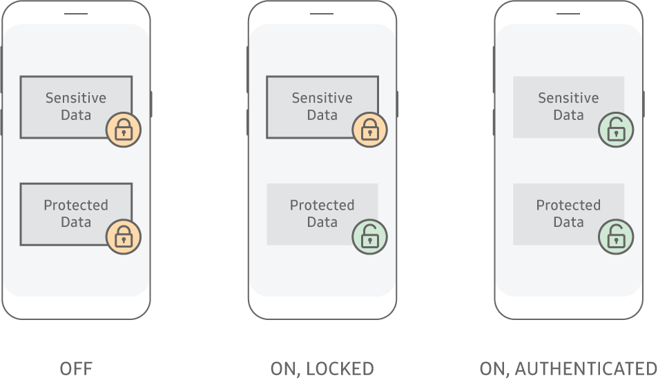

Sensitive Data Protection (SDP)
Last updated February 20th, 2024
This feature was deprecated in API level 33 with Knox SDK v3.7.
Protecting Data-At-Rest (DAR) on mobile devices is a major concern. While the industry standard is to encrypt all the data on a device, that data is decrypted and accessible after the device boots successfully. This access process means that once a device is lost or stolen, a sophisticated attack can extract data as long as the device is still running, even if the device is locked. Samsung created Sensitive Data Protection (SDP) to address this specific issue.
SDP meets the Mobile Device Fundamentals Protection Profile (MDFPP) requirements defined by the National Information Assurance Partnership (NIAP) for DAR, meaning that SDP is approved for use by the US government and military.
How SDP works

KPE protects user data on the device through Data-at-Rest encryption. Data remains encrypted on disk, and can only be decrypted when the device is powered on. Recovery of data decryption keys is tied to:
- device hardware, meaning data is recoverable only on the same device
- device boot-time integrity measurements
- a user credential dependent on configuration
Additionally, a mechanism is provided to optionally mark data as sensitive, which subsequently cannot be decrypted while the device is in the locked state. Here are the two protection modes that KPE provides for Data-at-Rest:
- Protected — All files stored on the device are treated as Protected by default. Protected data is stored on the device file system as encrypted data, and is only decrypted when an application accesses the data. This mechanism provides the data-at-rest protection while the device is powered off. Even if the device is in the lock state, applications can access protected data.
- Sensitive — Files can also be optionally marked as sensitive, using the Sensitive Data Protection (SDP) mechanism. SDP uses a key management scheme which ensures sensitive files can only be decrypted in the unlocked state, by purging keys from RAM when the device is locked. However, SDP also provides the ability for new files to be written and encrypted in the locked state using public key cryptography.
SDP encryption
Samsung Galaxy devices supporting Knox 3.3 and above are enabled to support Android’s File Based Encryption (FBE) for Data-at-Rest. Data encryption is enforced across the device using:
- EXT4 encryption FBE mechanism
- FIPS compliant hardware crypto module (AES256-XTS)
Optionally, the external SD Card can be used with:
- dm-crypt (introduced with Android 11) or eCryptfs stacked file system
- FIPS compliant Kernel crypto module (AES256-CBC).
FBE keys are derived using a password entry, which is either the default hard-coded password or the device user’s password used to unlock the device.
While in the unlocked state, SDP works as follows:
- Encrypts sensitive data using a per-file File Encryption Key (FEK). These keys are encrypted with the SDPK.sym (Sensitive Data Protection Key, symmetric), which is encrypted by the SdpMasterKey.
- Keeps the SdpMasterKey in memory only while the device is unlocked, to allow decryption of the SDPK.sym and SDPK.pri (private).
- Encrypts the SdpMasterKey using the key that is protected by both ephemeral keys derived from the device user’s password and a key chaining to the Root Encryption Key (REK) using the Keystore.
- Clears the SdpMasterKey when it transitions to the locked state, and re-derives it when the user unlocks the device or Work container.
While in the locked state, SDP handles apps writes of sensitive data differently:
- Rejects app attempts to open sensitive data files, as KPE no longer has the keys needed to retrieve sensitive data in memory and cannot re-derive them until the user unlocks the device or Work container.
- Encrypts any new sensitive app data by using both a:
- per-user sensitive data ECDH asymmetric key pair (SDPK.pri/pub)
- per-file ECDH key pair [DataK.pri/pub] generated on behalf of the app
- Protects the private portion of the ECDH key pair (SPDK.pri) with the SdpMasterKey, the same Key Encryption Key (KEK) used to encrypt the sensitive data per-file FEKs.
- Clears the SdpMasterKey when it transitions to the locked state.
See also: File Based Encryption (FBE) and Full Disk Encryption (FDE).
SDP protection of apps
The native Samsung Email app automatically uses SDP to protect email bodies and attachments. For performance reasons, the email header (including the subject and sender) is not protected with SDP.
The Knox Chamber is a dedicated directory in the Knox container file system. All stored files within the Knox Chamber directory are automatically marked as sensitive and are handled by the SDP mechanism.
Unique advantages of Knox SDP
- MDFPP-Compliant — Knox SDP is certified as MDFPP-compliant. Without Knox SDP, the base Android system is not certified as satisfying MDFPP requirements, which mandates a form of SDP. MDFPP compliance is a requirement for many government agencies and the companies they work with. Samsung has more MDFPP-certified products than any other mobility solution provider.
- Granular Control — You can use Knox SDP to protect not just the whole device, a container, or individual files but also selected database columns.
- Per-App Password — You can further customize Knox SDP to decrypt a particular app’s Sensitive Data only after an app user enters an app-specific password. In this case, the device or container unlock authentication alone does not decrypt app data. An app password is also needed for a higher layer of security.
- App Protection — Knox SDP is enabled by default to secure both Samsung Email as well as Knox Chamber.
On this page
Is this page helpful?